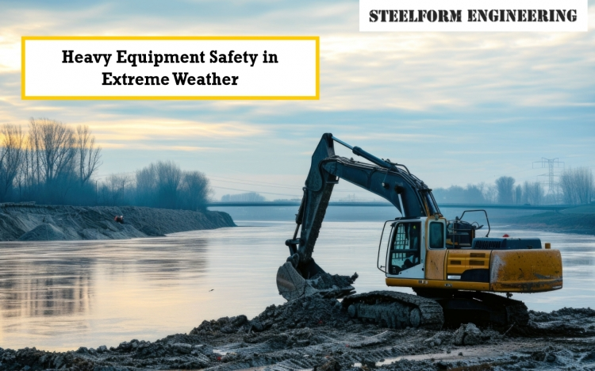

Heavy equipment operators encounter different obstacles when it comes to working during extreme weather conditions, including blistering heat, freezing cold, and heavy storms. The safety of individuals and equipment needs to be a priority that involves planning, training, and compliance with all safety procedures. This blog will help you manage the risks of working with heavy construction equipment during extreme climatic conditions.
The heavy equipment operator's work in extreme weather begins with pre-operation equipment checks. Extreme heat or cold can thicken fluids or cause overheating, which can cause performance issues and even damage to the equipment.
Cooling Systems: Check and maintain the cooling system regularly, including the radiator and coolant level, to prevent an engine overheating.
The importance of training staff cannot be overstated in ensuring a safe work environment, regardless of the amount of maintenance or engineering controls. Training employees in such extreme conditions will prepare them for the mental demands and physical performance demands required of them.
The worker should recognise signs of heat exhaustion and heat stroke, such as dizziness, headache, sweating, and confusion.
Cold temperatures pose the threat of frostbite or hypothermia. Operators need to know the signs and be prepared to find warmth.
Safety Outfits: Encourage them to wear multiple layers, insulated gloves, and hats to retain warmth.
Proper Breaks: Ensure they take frequent warm-ups in a heated environment to warm up and be alert.
Don't touch metal: Remind them not to touch metal surfaces while cold without gloves to prevent skin freezing.
Company safety protocols must be reinforced during bad weather conditions and strictly adhered to.
The safety of heavy equipment operations under extreme weather conditions is a shared responsibility that requires everyone's attention to detail and commitment to safety. By focusing on a three-pronged strategy consisting of thorough heavy equipment safety inspections, robust training for operators and adhering to safety systems for extreme weather equipment operation,exposure to danger during heavy equipment operations under extreme weather will be prevented.
Whether cold-weather heavy equipment operation is placing equipment safety at risk or operating excavators in extreme heat is impacting safety, a proactive and preventative mindset is necessary. By implementing these best practices, companies will be able to make equipment last longer and, most importantly, ensure that every operator is well protected. There is no better resource for heavy machinery and safe operation than Steelform Engineering to help through the most challenging work environments.